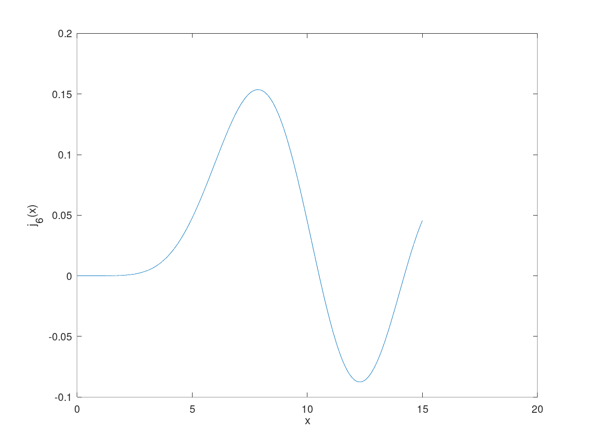
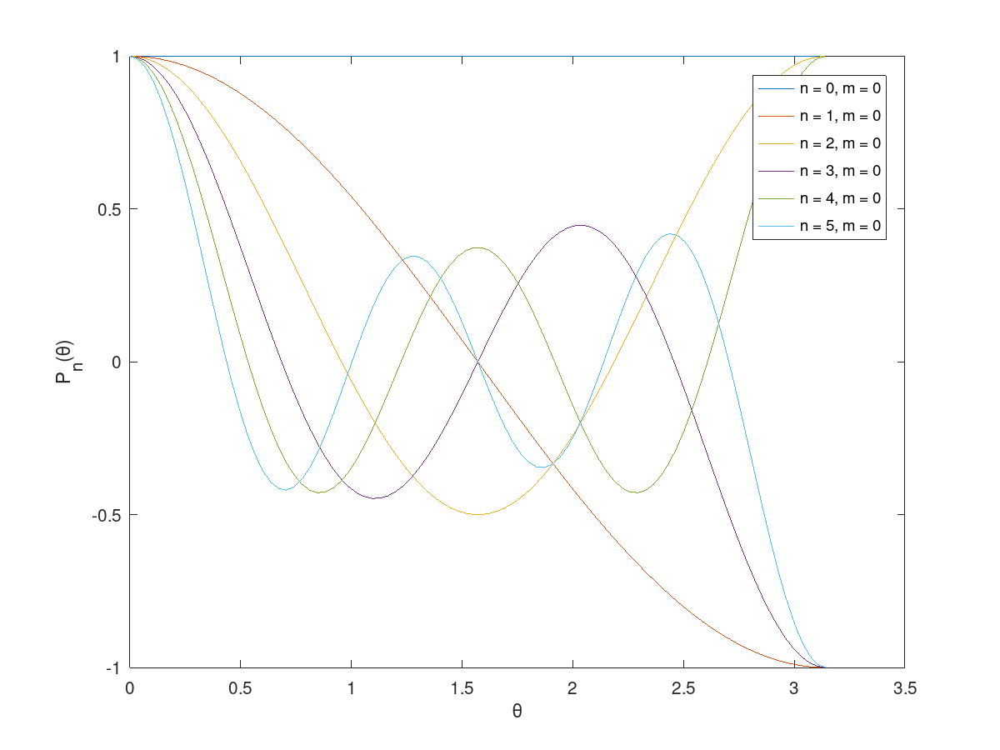
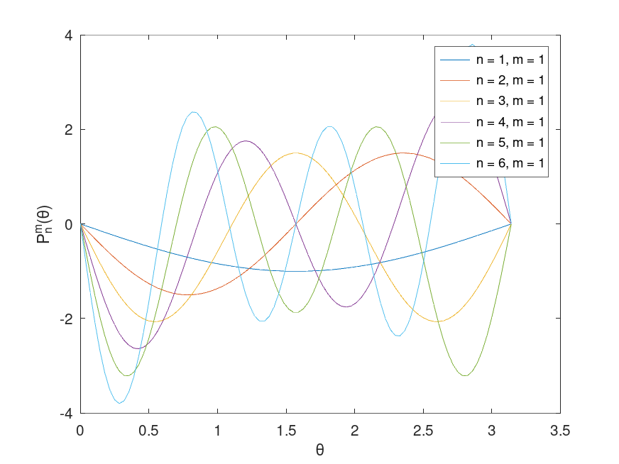
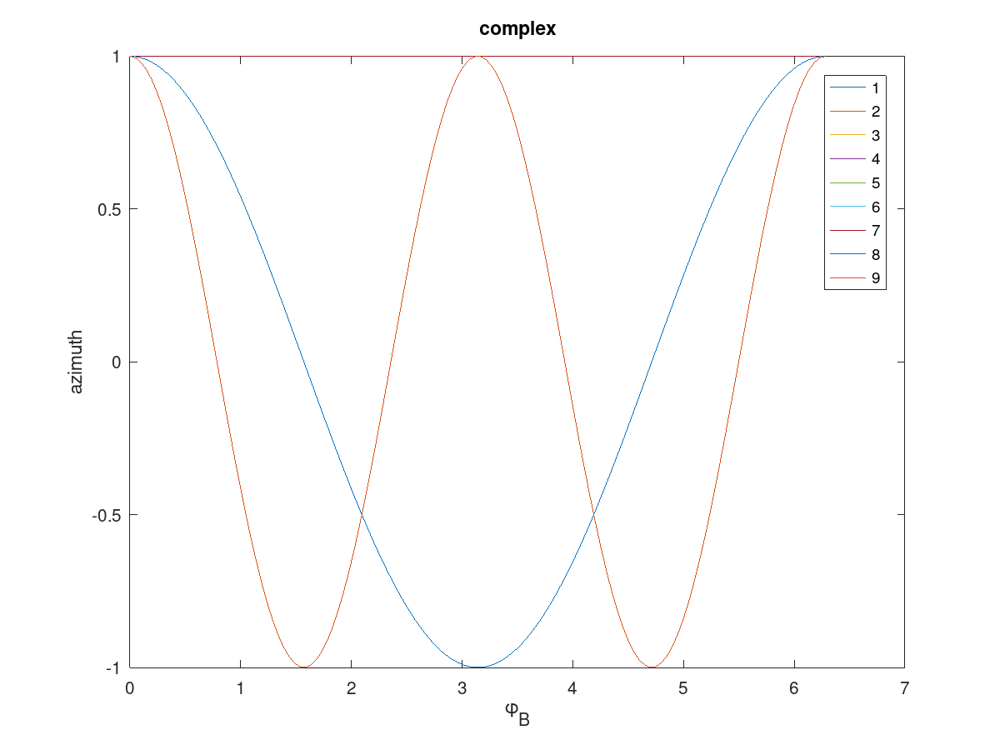
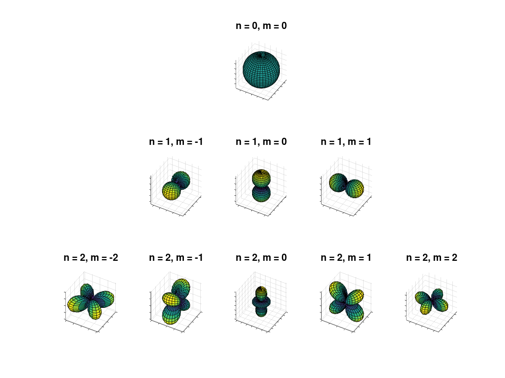

Spherical Series
Table of Contents
- 1. General Information
- 2. Spherical Mathematics
- 3. Spherical Functions
- 4. Spherical Fourier Transform
- 5. Higher Order Ambisonics
- 6. Examples
1 General Information
This is all about Higher Order Ambisonics.
We need to implement some math.
2 Spherical Mathematics
2.1 Fourier Bessel Series
Spherical Series provides means to calculate the "Fourier Bessel Series". The form of this series is
\begin{equation} \label{eq:fbs} P(r, \theta, \phi, k) = \sum_{n = 0}^{\infty} \sum_{m = -n}^{n} \left\{\begin{array}{ll} A_{n}^{m}(k) & j_n(kr) \\ B_{n}^{m}(k) & h_n(kr) \\ \end{array}\right\} Y_{n}^{m}(\theta, \phi). \end{equation}In particular, we have
- \(A_{n}^{m}(k)\) coefficients describing a soundfield outside
- \(B_{n}^{m}(k)\) coefficients describing a soundfield inside
- \(j_n(kr)\) the spherical bessel function
- \(h_n(kr)\) the spherical hankel function
- \(Y_{n}^{m}(\theta, \phi)\) spherical harmonics
- \(k = \omega/\mathrm c\) wavenumber
- \(\mathrm c\) speed of sound
2.2 HOA Series
The product \(j_n(kr) \, Y_{n}^{m}(\theta, \phi)\) may combined to a basefunction \(R_n^m(r, \theta, \phi, k)\) and \(h_n(kr) \, Y_{n}^{m}(\theta, \phi)\) is combined to basefunction \(S_n^m(r, \theta, \phi, k)\) yielding
\begin{equation} \label{eq:1r} P(r, \theta, \phi, k) = \sum_{n = 0}^{\infty} \sum_{m = -n}^{n} \left\{\begin{array}{ll} A_{n}^{m}(k) & R_n^m(r, \theta, \phi, k)\\ B_{n}^{m}(k) & S_n^m(r, \theta, \phi, k)\\ \end{array}\right. . \end{equation}2.3 Spherical Fourier Transform
The inverse spherical Fourier Transform is defined as
\begin{equation} \label{eq:isfs} P(r, \theta, \phi, k) = \sum_{n = 0}^{\infty} \sum_{m = -n}^{n} P_{n}^{m}(k,r) Y_{n}^{m}(\theta, \phi). \end{equation}as found in williams99_fourier_acoustic p. 208 equation (6.96).
Combination of \(A_{n}^{m}(k)\) and \(j_n(kr)\) results in Fourier coefficients used in the inverse transform
\begin{equation} \label{eq:sfs} P(r, \theta, \phi, k) = \sum_{n = 0}^{\infty} \sum_{m = -n}^{n} \left\{\begin{array}{ll} C_{n}^{m}(k,r) \\ D_{n}^{m}(k,r) \\ \end{array}\right\} Y_{n}^{m}(\theta, \phi). \end{equation}3 Spherical Functions
3.1 sphericalbesselj
sphericalbesselj.m: calculates spherical bessel function at order N
3.1.1 Syntax
J_sph_CF = sphericalbesselj(N_order, x_CF);
3.1.2 Description
spherical bessel function at order N
3.1.3 Input Arguments
- xCF
- C x F matrix
3.1.4 Return Values
- JsphCF
- C x F matrix
3.1.5 Examples
3.1.6 Tips
3.1.7 Alternatives
3.1.8 See Also
- Examples
Calculate the sphericalbessel function of order 6.
N_order = 6; x_F = linspace(0, 15, 200); J_sph_OF = sphericalbesselj(N_order, x_F);
This results in a graph like Figure fig:sphbesselexa6.

Figure 1: The spherical bessel function of order 6.
3.2 sphericalbessel
sphericalbessel.m: wrapper for sphericalbesselj, return all orders up to N
3.2.1 Syntax
J_sph_OCF = sphericalbessel(N_order, x_CF)
3.2.2 Description
calculate spherical besselfunction of order Norder along matrix xCF.
3.2.3 Input Arguments
- Norder
- order
- xCF
- matrix with arguments
3.2.4 Return Values
- JsphOCF
- matrix of all orders 0 up to \((N_order+1)^2\) and input dimensions CF
3.2.5 Examples
N_order = 6;
x_F = linspace(0, 15, 200);
J_sph_OF = sphericalbessel(N_order, x_F);
figure(1);
plot(x_F, J_sph_OF);
xlabel('x');
ylabel('j_6(x)');
3.2.6 Tips
3.2.7 Alternatives
3.2.8 See Also
N_order = 6; x_F = linspace(0, 15, 200); J_sph_OF = sphericalbessel(N_order, x_F); figure(1); plot(x_F, J_sph_OF); xlabel('x'); ylabel('j_6(x)'); xlim([0, 15]); S_file = 'img/sphericalbessel.png'; saveas(1, S_file); ans = S_file;
3.3 sphericalbessely
sphericalbessely.m: compute the spherical Bessel's function of the second kind
3.3.1 Syntax
N_sph = sphericalbessely(n, x)
3.3.2 Description
2nd kind Bessel function is computed for each element of x.If the input argument (element of a matrix x) is = 0, the output has a value NaN.
3.3.3 Input Arguments
- n - Ambisonics order
- x - matrix to return the result (should not have more than 2 dimensions)
3.3.4 Return Values
- Nsph - matrix of the 2nd kind Bessel function values
3.3.5 Examples
3.3.6 Tips
3.3.7 Alternatives
3.3.8 See Also
bessely
3.4 sphericalneumann
sphericalneumann.m: 2nd kind Bessel function for Ambisonics coefficients are given as a vector
3.4.1 Syntax
N_sph_OCF = sphericalneumann(N_order, x_CF)
3.4.2 Description
First derivative of the 2nd kind Bessel function is computed for each element of x.If the input argument (element of a matrix x) is = 0, the output has a value NaN.
3.4.3 Input Arguments
- Norder - Ambisonics order
- xCF - matrix to return the result (should not have more than 2 dimensions)
3.4.4 Return Values
- NsphOCF - multi-dimensional matrix with Neumann function calculation results
3.4.5 Examples
3.4.6 Tips
3.4.7 Alternatives
3.4.8 See Also
sphericalbessely
3.5 sphericalhankel
sphericalhankel.m: returns the Bessel function of the 3rd kind (Hankel function)
3.5.1 Syntax
h_OCF = sphericalhankel(n, x_CF)
3.5.2 Description
According to the mathematical definition, Hankel function is obtained be combining two linearly independent solutions of Bessel's differential equation (Wikipedia). This is done by means of summation spherical bessel function of the 1st kind with spherical bessel function of the 2nd kind, multiplyed by the imaginary unit.
This calculation is done for all elements of the matrix xCf
3.5.3 Input Arguments
- n - Ambisonics order
- xCF - matrix to return the result (should not have more than 2 dimensions)
3.5.4 Return Values
- hOCF - multi-dimensional matrix of calculation results
3.5.5 Examples
3.5.6 Tips
3.5.7 Alternatives
3.5.8 See Also
sphericalbessel, sphericalneumann
3.6 sphericalbesselr
sphericalbessel_r.m: returns the 1st radial derivative of the spherical Bessel function
* Syntax
J_r_OCF = sphericalbessel_r(N_order, x_CF)
* Description
Similar with function sphericalbesselj, sphericalbesselr deals with the case when Ambisonics coefficients are given as a vector.
* Input Arguments
Norder - Ambisonics order xCF - matrix to return the result (should not have more than 2 dimensions)
* Return Values
JrOCF - multi-dimensional matrix with Bessel function calculation results
* Examples
* Tips
* Alternatives
* See Also
sphericalbesseljr
3.7 sphericalnormalisation
sphericalnormalisation - calculates the normalization factor
./sphericalnormalisation.m
3.7.1 Syntax
N_O = sphericalnormalisation(N_order, norm)
3.7.2 Description
Calculates the normalization factor for a given harmonic order and normalization type. If the type of normalization is not defined at the output, full normalization 'norm' will be performed.
3.7.3 Input Arguments
- Norder
- order of a spherical harmonic
- norm
type of normalization:
'norm' fully normalized; 'N3D' normalized; 'sch0' or 'SN3D' seminormalazed 'sch1' Schmidt-Semi-normalized (Matlab) 'sconv' norm. over all spherical convolutions 'planewaveimpinging' norm. for plane waves
3.7.4 Return Values
- NO - corresponding normalization factor
3.7.5 Examples
3.7.6 Tips
3.7.7 Alternatives
3.7.8 See Also
3.8 sphericallegendre
sphericallegendre.m: calculates spherical Legendre functions
3.8.1 Syntax
P_OA = sphericallegendre(N_order, theta_A)
3.8.2 Description
Resulting matrix of Legendre function values has the dimensions ((Norder+1)2+1)xlength(thetaA). For positive odd m a negative sign is used. No normalization is used. Regarding normalization the calculation is done for a symmetric calculation of m.
- for \(m >= 0\): \(P_n^m(\cos(\theta )\) [including \((-1)^m\)]
- for \(m < 0:\) \((-1)^m P_n^{|m|}(\cos(\theta )\)
equivalent to (using legendre polynomial notation without Condon-Shortley phase):
- for \(m >= 0\): \((-1)^m P_n,|m|( \cos(\theta )\)
- for \(m < 0\): \(P_n,|m|( \cos(\theta )\)
3.8.3 Input Arguments
- Norder
- order of the spherical harmonic
- thetaA
- vector representing the calculation range of inclination theta
3.8.4 Return Values
- POA
- matrix of Legendre function values
3.8.5 Examples
Legendre functions for \(n = 0, 1, 2, 3, 4, 5\) according to Figure 6.2 in williams99_fourier_acoustic are shown by the following piece of code.
N_order = 5; theta_A = linspace(0, pi, 90); P_OA = sphericallegendre(N_order, theta_A); figure(1); n = 0:N_order; m = 0; o = n.^2 + n + m + 1; for l = 1:length(n) S_label{l} = sprintf('n = %i, m = %i', n(l), m); end plot(theta_A, P_OA(o,:)); xlabel('\theta'); ylabel('P_{n}(\theta)'); legend(S_label); S_file = 'img/legendrefigure62.png'; saveas(1, S_file); ans = S_file;

Figure 2: Legendre functions for \(n = 0, 1, 2, 3, 4, 5\) and \(m=0\).
Legendre functions for \(n = 1, 2, 3, 4, 5, 6\) according to Figure 6.3 in williams99_fourier_acoustic are shown by the following piece of code.
N_order = 6; theta_A = linspace(0, pi, 90); P_OA = sphericallegendre(N_order, theta_A); figure(1); n = 1:N_order; m = 1; o = n.^2 + n + m + 1; for l = 1:length(n) S_label{l} = sprintf('n = %i, m = %i', n(l), m); end plot(theta_A, P_OA(o,:)); xlabel('\theta'); ylabel('P_{n}^m(\theta)'); legend(S_label); S_file = 'img/legendrefigure63.png'; saveas(1, S_file); ans = S_file;

3.8.6 See Also
legendre
3.9 trg
trg.m: calculates something for given argument
3.9.1 Syntax
y = trg(m, x)
3.9.2 Description
3.9.3 Input Arguments
- x : numeric argument
- m : order
3.9.4 Return Values
y
3.9.5 Examples
3.9.6 Tips
3.9.7 Alternatives
3.9.8 See Also
trh
3.10 trh
trh.m: calculates something for given argument
3.10.1 Syntax
3.10.2 Description
real-valued circular harmonics 2D normalised (N2D) of degree m and azimuth x
2D normalised (N2D) as defined in sec. 3.1 of
- Daniel:
Spatial Sound Endcoding Including Near Field Effect: Introducing Distance coding Filters and a Viable, New Ambisonic Format, AES 23rd International Conference, 2003
3.10.3 Input Arguments
- m
- degree
- x
- azimuth
3.10.4 Return Values
- y
- circular harmonic
3.10.5 Examples
3.10.6 Tips
3.10.7 Alternatives
3.10.8 See Also
trh
3.11 sphericalazimuth
sphericalazimuth.m: calculates spherical azimuth of order N for angle phi
3.11.1 Syntax
D_OB = sphericalazimuth(N_order, phi_B, S_type)
3.11.2 Description
spherical azimuth of order N for angle phi
If less than 3 variablrs are defined at the input, calculation is done for Stype = 'complex' case.
3.11.3 Input Arguments
- Norder
- order of the spherical harmonic
- phiB
- vector representing the calculation range of azimuth phi ?
- Stype
- type of the spherical harmonic: 'real', 'realsigned', 'realunsigned' or 'complex'
3.11.4 Return Values
- DOB
- matrix with o orders and B angles
3.11.5 Examples

3.11.6 Tips
3.11.7 Alternatives
3.11.8 See Also
trg, trh
3.12 sphericalharmonic
sphericalharmonic.m: returns a spherical harmonic of given order, type and normalization
3.12.1 Syntax
Y_OAB = sphericalharmonic(N_order, theta_A, phi_B, norm, type)
3.12.2 Description
If the number of input arguments is < 5, the calculation would be done for a 'complex' type of a spherical harmonic. If the number of input arguments is < 4, the calculation would be done for a 'norm' normalization type case.
Harmonics are returned in rows of p (e.g. row = 1 -> m = 0, row = 2 -> m = 1) after e.g. Poletti.
3.12.3 Input Arguments
- Norder
- Ambisonics order
- thetaA
- vector representing the calculation range of inclination theta
- phiB
- vector representing the calculation range of azimuth phi
- norm
string with type of normalization:
'norm' fully normalized 'N3D' normalized 'sch0' or 'SN3D' seminormalazed 'sch1' Schmidt-Semi-normalized (Matlab(tm)) 'sconv' norm. over all spherical convolutions 'planewaveimpinging' norm. for plane waves - type
type of the spherical harmonic:
'real', 'realsigned', 'realunsigned' or 'complex'
3.12.4 Return Values
- YOAB
- matrix of the spherical harmonics values
3.12.5 Examples

Figure 5: Spherical harmonic functions shown as functions of the radius.
3.12.6 Tips
3.12.7 Alternatives
3.12.8 See Also
sphericalnormalisation, sphericallegendre, sphericalazimuth
3.13 sphericalmodematrix
sphericalmodematrix.m: calculates something for given argument
3.13.1 Syntax
Psi_OL = sphericalmodematrix(N_order, theta_L, phi_L, S_norm, S_type)
% \(Id\)
3.13.2 Description
sphericalmodematrix - returns Ambisonics complex conjugate values
3.13.3 Input Arguments
- Norder - Ambisonics order
- thetaL - vector representing the calculation range of inclination theta
- phiL - vector representing the calculation range of azimuth phi
- Snorm - string with type of normalization: 'norm' - fully normalized; 'N3D'- normalized; 'sch0' or 'SN3D'- seminormalazed 'sch1'- Schmidt-Semi-normalized (Matlab) 'sconv' - norm. over all spherical convolutions 'planewaveimpinging' - norm. for plane waves
3.13.4 Return Values
- PsiOL - matrix of complex conjugate spherical harmonics values
3.13.5 Examples
3.13.6 Tips
3.13.7 Alternatives
3.13.8 See Also
sphericalharmonic
4 Spherical Fourier Transform
4.1 sphericalseriesisfs
sphericalseries_isfs.m: calculate spherical series functions summands
4.1.1 Syntax
F_OCABF = sphericalseries_isfs(f_OCF, Y_OAB)
4.1.2 Description
precalculation of ISF
4.1.3 Input Arguments
- fOCF
- spherical fourier series coefficient
- YOAB
- spherical harmonics
4.1.4 Return Values
- FOCABF
- intermediate result
4.1.5 Examples
4.1.6 Tips
4.1.7 Alternatives
4.1.8 See Also
4.2 sphericalseriesisf
sphericalseries_isf.m: calculates something for given argument
* Syntax
* Description
* Input Arguments
* Return Values
* Examples
* Tips
* Alternatives
* See Also
4.3 sphericalseriessfc
sphericalseries_sfc.m: returns the coefficients of spherical Fourier transform
4.3.1 Syntax
C_OCFD = sphericalseries_sfc(A_OFD, B_OFD, r_C, R_src, k_F)
4.3.2 Description
4.3.3 Input Arguments
- AOFD - matrix of HOA coefficients
- BOFD - matrix of HOA coefficients
- rC - radius ???
- Rsrc - source radius
- kF - vector of a wave number values for a given frequency range
4.3.4 Return Values
- COCFD - multi-dimensional matrix of the spherical FT coefficients
4.3.5 Examples
4.3.6 Tips
4.3.7 Alternatives
4.3.8 See Also
sphericalbessel, sphericalhankel
5 Higher Order Ambisonics
5.1 Sphericalserieshoa
sphericalseries_hoa.m: returns result of HOA series
* Syntax
p_CABF = sphericalseries_hoa(C_OF, F_OCABF, D_OF, G_OCABF)
* Description
Returns result of HOA series with coefficients C and D and basis functions F and G. The second pair (D and G) is optional. The matrix of basis function should have at least 3 dimensions.
* Input Arguments
- COF
- ???????
- FOCABF
- basis function values matrix
- DOF
- ??????
- GOCABF
- basis function values matrix
* Return Values
* Examples
* Tips
* Alternatives
* See Also
5.2 Sphericalserieshoaplane
sphericalseries_hoa_plane.m: calculates plane wave coefficients \(A\) for a HOA representation.
5.2.1 Syntax
A_OFD = sphericalseries_hoa_plane(N_order, theta_D, phi_D, S_norm, S_type, F, psi_D)
5.2.2 Description
calculates plane wave coefficients \(A\) for a HOA representation.
5.2.3 Input Arguments
- Norder
- Ambisonics order
- thetaD
- vector representing the calculation range of inclination theta
- phiD
- vector representing the calculation range of azimuth phi
- Snorm
string with type of normalization:
'norm' fully normalized; 'N3D' normalized; 'sch0' or 'SN3D' seminormalazed 'sch1' Schmidt-Semi-normalized (Matlab) 'sconv' norm. over all spherical convolutions 'planewaveimpinging' norm. for plane waves - Stype
- type of the spherical harmonic: 'real', 'realsigned', 'realunsigned' or 'complex'
- F
- number of frequency bins (having all the same value)
- psiD
- weights for D input direction (optional argument)
5.2.4 Return Values
- AOFD
- matrix of HOA coefficients
5.2.5 Examples
5.2.6 Tips
5.2.7 Alternatives
5.2.8 See Also
sphericalnormalisation, sphericalmodematrix
% Rasta % ------------------------------------------------------------------- % conus if 0 R_max = 1.5; C = 50; r_C = linspace(0, R_max, C); A = 1; theta_A = linspace(pi/2, pi/2, A); B = 50; phi_B = linspace(0, 2*pi, B); gg_CAB = vectorgrid(r_C, theta_A, phi_B, 'spherical'); end % sphere if 1 R_max = .15; C = 1; r_C = linspace(R_max, R_max, C); A = 30; theta_A = linspace(0, pi, A); B = 40; phi_B = linspace(0, 2*pi, B); gg_CAB = vectorgrid(r_C, theta_A, phi_B, 'spherical'); end % Spherical stuff % ------------------------------------------------------------------- N_order = 7; F = 4; f_F = linspace(100, 1000, F); % Frequenzen k_F = -2*pi*f_F/342; % Wellenzahl % ebene Welle % ------------------------------------------------------------------- Theta_i = pi/2; Phi_i = pi/2; S_norm = 'norm'; S_type = 'complex'; A_OF = sphericalseries_hoa_plane(N_order, Theta_i, Phi_i, ... S_norm, S_type, F); % Sphärische-Fouriertransformations-Coeffizienten (sfc) % ------------------------------------------------------------------- C_OCF = sphericalseries_sfc(A_OF, [], r_C, inf, k_F); % inverse sphärische Fouriertransformation (isf) % ------------------------------------------------------------------- % Basisfunktion Y_OAB = sphericalharmonic(N_order, theta_A, phi_B, S_norm, S_type); % ISF im Frequenzbereich P_CABF = sphericalseries_isf(C_OCF, Y_OAB); % malen % ------------------------------------------------------------------- if 1 for f = 1:F figure(f); surface(gg_CAB, squeeze(abs(real(P_CABF(:,:,:,f))))); axis('equal'); grid('on'); view([30 40]); end end
5.3 sphericalserieshoaspherical
5.4 sphericalserieshoabasis
sphericalseries_hoa_basis.m: returns spherical basis functions R = jn Y and S = hn Y
5.4.1 Syntax
5.4.2 Description
[R_OCABF, S_OCABF] = sphericalseries_hoa_basis(N_order, R_src, ...
vg_CAB, k_F, ...
S_norm, S_type)
returns spherical basis functions R = jn Y and S = hn Y
5.4.3 Input Arguments
5.4.4 Return Values
5.4.5 Examples
5.4.6 Tips
5.4.7 Alternatives
5.4.8 See Also
5.5 sphericalseriessfc
6 Examples
6.1 Plane wave
Grid for space
% Rasta % ------------------------------------------------------------------- R_max = 1.4; C = 100; r_C = linspace(0, R_max, C); A = 1; theta_A = linspace(pi/2, pi/2, A); B = 100; phi_B = linspace(0, 2*pi, B); gg_CAB = vectorgrid(r_C, theta_A, phi_B, 'spherical');
frequency direction of plane wave
% ebene Welle % ------------------------------------------------------------------- C_snd = 342; % m/s F = 1; % Hz F_max = 500; % Hz F_min = 1; % gleichförmig unterteilt f_F = linspace(F_min, F_max, F); % Frequenzen k_F = -2*pi*f_F/C_snd; % Wellenzahl %phi = exp(i*0.5*pi/2); % Phase einfallende Welle % Vektor Einfallsrichtung % ------------------------------------------------------------------- Theta_src = pi/2; Phi_src = 0.3*pi/2; R_src = 1.2; vM_src = vector(R_src, Theta_src, Phi_src, 'spherical');
HOA approximation
% "echte" Quelle, nicht Winkel-begrenzt % ------------------------------------------------------------------- % Grid in lin. angeordnete Punktevektor bringen vm_E = vectorgrid_vector(gg_CAB); % Wellenzahlvektoren für "echte" Lautsprecherschallfelder vk_F = vector_scale(k_F, vector_normalise(vM_src)); % nicht-winkelbegrenzte Schallfelder eben P_real_EF = planewave(vm_E, vk_F); % for f = 1:F % umsortieren P_CAB{1} = vectorgrid_reshape(P_real_EF(:,f), gg_CAB); end %% Koeffzi. der Fourier-Bessel-Reihe %% ----------------------------------------------------------------- N_order_list = [5, 10]; S_norm = 'norm'; S_type = 'real'; for n = 1:length(N_order_list) N_order = N_order_list(n); % Eingangsmode Psi_src_O = sphericalmodematrix(N_order, Theta_src, Phi_src, S_norm, S_type); % Vorfaktor für ebene Welle N_pln_O = sphericalnormalisation(N_order, 'planewave'); % HOA Koeff A_pln_O = N_pln_O .* Psi_src_O; % Druckverteilungen berechnet: % ------------------------------------------------------------------- % SFC-Koeffzi. C_pln_OC = sphericalseries_sfc(A_pln_O, [], r_C, inf, k_F); % Basisfunktion zum Rasta Y_OAB = sphericalharmonic(N_order, theta_A, phi_B, S_norm, S_type); % ISF im Frequenzbereich P_CAB{2*n} = sphericalseries_isf(C_pln_OC, Y_OAB); % Differenz zur idealen ebenen Welle P_CAB{2*n + 1} = P_CAB{2*n} - P_CAB{1}; end % N_order_list % malen % ------------------------------------------------------------------- v_view = [0 90]; c_map = colormap(badcolormap(256)); %c_map = colormap('hot'); b_colorbar = 0; b_print = 1; if ~isdir('./Bilder') mkdir('./Bilder'); end for n = 1:length(P_CAB) P_CABF = P_CAB{n}; for f = 1:F figure(20); clf; vectorgrid_surface(gg_CAB, squeeze((real(P_CABF(:,:,:,f))))); c_minmax = max(max(max(squeeze(abs(real(P_CABF(:,:,:,f))))))) * [-1 1]; caxis(c_minmax); colormap(c_map); plot_speaker(vM_src, vM_src, [1, 0, 0], [0, pi/2, 0]'); axis('equal'); grid('on'); view(v_view); title('\Re p'); xlabel('x (m)'); ylabel('y (m)'); zlabel('z (m)'); if b_colorbar colorbar; end end for f = 1:F figure(21); clf; vectorgrid_surface(gg_CAB, squeeze((imag(P_CABF(:,:,:,f))))); c_minmax = max(max(max(squeeze(abs(imag(P_CABF(:,:,:,f))))))) * [-1 1]; caxis(c_minmax); colormap(c_map); plot_speaker(vM_src, vM_src, [1, 0, 0], [0, pi/2, 0]'); axis('equal'); grid('on'); view(v_view); title('\Im p'); xlabel('x (m)'); ylabel('y (m)'); zlabel('z (m)'); if b_colorbar colorbar; end end for f = 1:F figure(22); clf; vectorgrid_surface(gg_CAB, squeeze((abs(P_CABF(:,:,:,f))))); if n == 1 c_minmax = [0 2]; else c_minmax = caxis; end caxis(c_minmax); colormap(c_map); plot_speaker(vM_src, vM_src, [1, 0, 0], [0, pi/2, 0]'); axis('equal'); grid('on'); view(v_view); title('|p|'); xlabel('x (m)'); ylabel('y (m)'); zlabel('z (m)'); if b_colorbar colorbar; end end for f = 1:F figure(23); clf; vectorgrid_surface(gg_CAB, squeeze((angle(P_CABF(:,:,:,f))))); c_minmax = max(max(max(squeeze(angle((P_CABF(:,:,:,f))))))) * [-1 1]; caxis(c_minmax); colormap(c_map); plot_speaker(vM_src, vM_src, [1, 0, 0], [0, pi/2, 0]'); axis('equal'); grid('on'); view(v_view); title('\angle p'); xlabel('x (m)'); ylabel('y (m)'); zlabel('z (m)'); if b_colorbar colorbar; end end if b_print figure(20); figuresize(3, 3); figurefont(6); figuresave(sprintf('Bilder/ebenewelle_%i_real.pdf', n)); figure(21); figuresize(3, 3); figurefont(6); figuresave(sprintf('Bilder/ebenewelle_%i_imag.pdf', n)); figure(22); figuresize(3, 3); figurefont(6); figuresave(sprintf('Bilder/ebenewelle_%i_abs.pdf', n)); figure(23); figuresize(3, 3); figurefont(6); figuresave(sprintf('Bilder/ebenewelle_%i_angle.pdf', n)); end % n % input('press return'); end